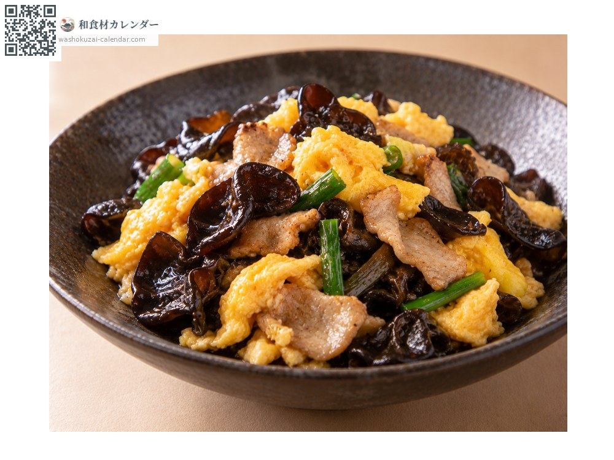
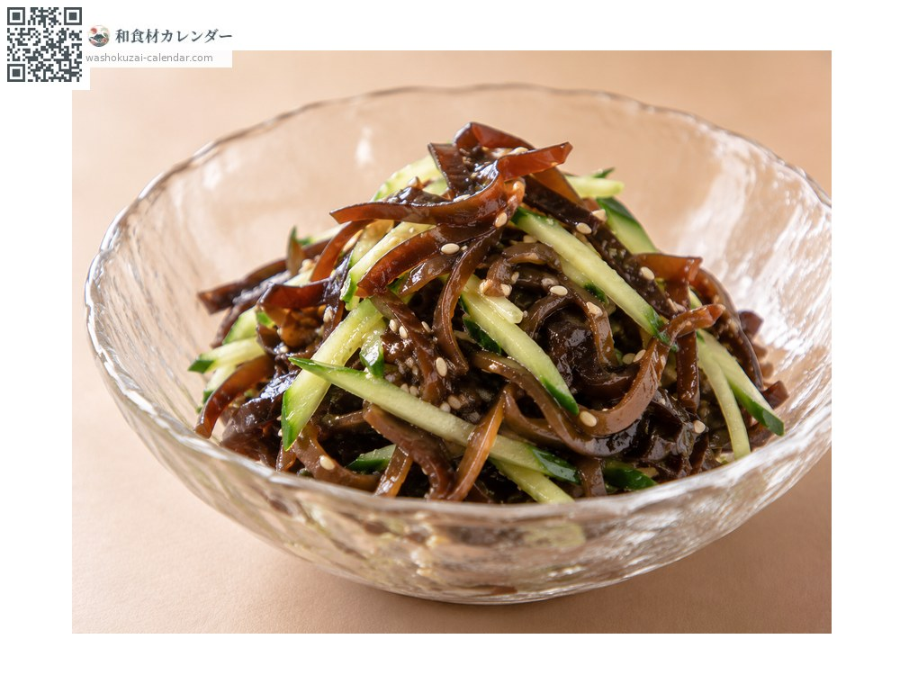
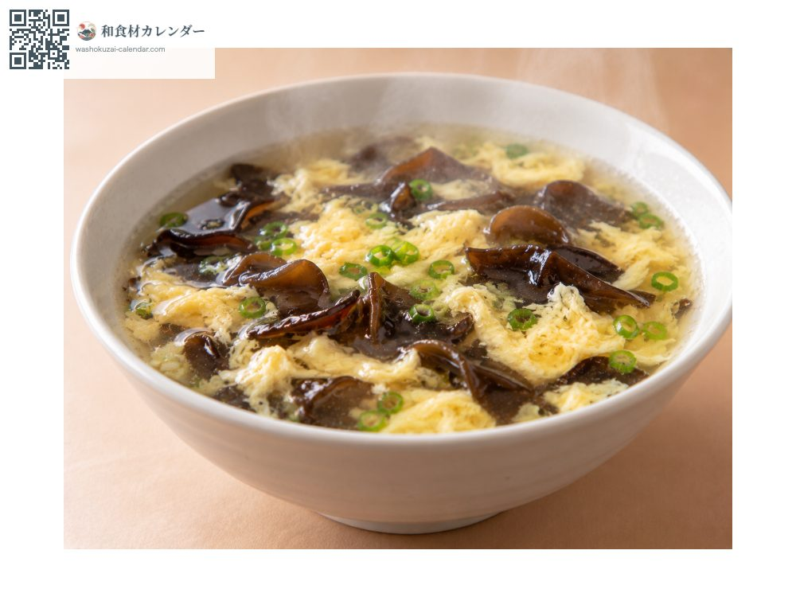
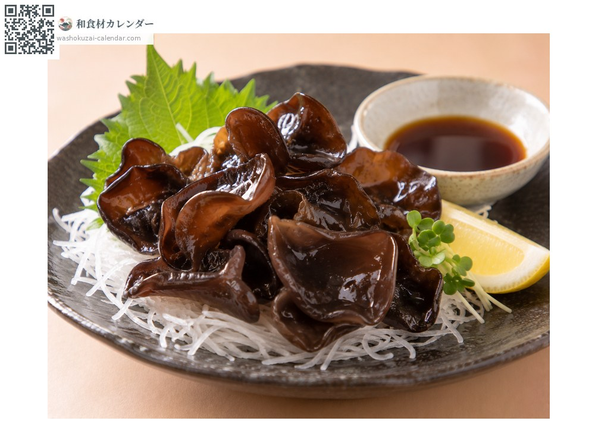

蔬菜
木耳
キクラゲ きくらげ kikurage
別名kikurage
當令時期為6月、7月、8月、9月

當令時期
1月
2月
3月
4月
5月
6月
7月
8月
9月
10月
11月
12月
當令有供應
料理方式

中式快炒
與豬肉和蛋同炒，口感是主角。

涼拌
切絲後以調味醋拌勻。

湯品
加入中式湯中，適合用泡發的乾貨。

生食
鮮木耳快速汆燙後沾柚子醋。
挑選方式
厚實有彈性、不乾燥，背面偏白者。
保存方式
鮮品冷藏數日內食用。乾貨常溫可長期保存。
主要產地
小知識
菇類的一種。日文漢字寫作「木耳」，源自長在樹木上、形似耳朵的樣子。日本產的鮮木耳厚實、口感特別脆，與乾貨被視為不同的食材。